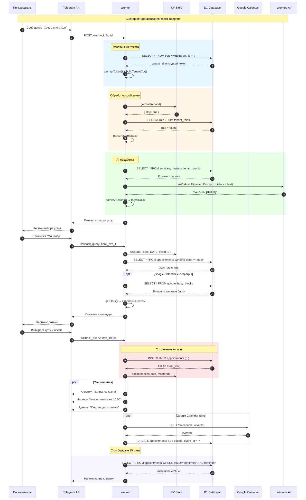

Дата: 4 апреля 2026 · Версия 1.0 · Scope: кодовая база, архитектура, безопасность, производительность
Multi-tenant SaaS для бронирования в салонах: Telegram, WhatsApp, Instagram, Cloudflare Workers, Admin Mini-App (Next.js).
| ID | Severity | Проблема |
|---|---|---|
| S1 | CRITICAL | Race condition при одновременном бронировании |
| S2 | HIGH | Нет rate limiting на auth endpoints admin-app |
| S3 | HIGH | AI prompt injection — пользовательский текст не санитизирован |
| S4 | HIGH | BOT_ENCRYPTION_KEY опционален — plaintext токены в D1 |
| S5 | HIGH | Google Calendar sync без backoff — риск DOS |

Исходник: 01-system-architecture.mmd

Исходник: 02-data-flow.mmd

Исходник: 03-auth-flow.mmd

Исходник: 04-booking-flow.mmd

Исходник: 05-multi-channel-flow.mmd

Исходник: 06-billing-lifecycle.mmd

Исходник: 07-state-machine.mmd
Навигация: стрелки ← →, клик по левому/правому краю. Для показа с картинками: из корня репозитория npx serve analysis → открыть /presentation/.
← → · края экрана